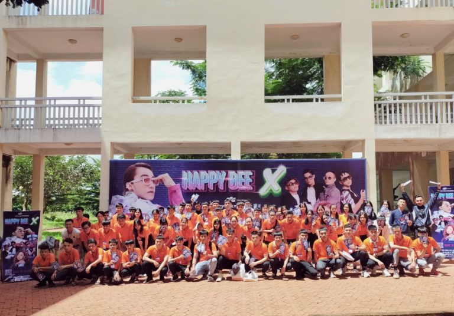

 Đây là đợt định hướng đầu tiên của năm 2021 dành cho các tân sinh viên chính thức nhập học tại cơ sở FPT Polytechnic Tây Nguyên, tham gia tuần định hướng, các sinh viên sẽ được hướng dẫn về phương pháp học tập cũng như quy chế đào tạo, tập huấn để sử dụng hệ thống thông tin tại trường như tài khoản email, hệ thống quản trị học tập LMS, AP, diễn đàn sinh viên, group facebook của nhà trường. Đây là những hoạt động cần thiết để các bạn nhanh chóng hòa nhập với môi trường mới tại Cao đẳng FPT Polytechnic Tây Nguyên. Anh Trần Hữu Tân – Cán bộ phòng Công tác sinh viên cho biết: “Ngoài những thông tin về cơ sở vật chất, quy chế đào tạo, tuần định hướng còn là dịp để nhà trường lắng nghe tâm tư, nguyện vọng của từng sinh viên. Thông qua đó, phòng Công tác sinh viên sẽ có những chương trình hoạt động phù hợp với đại đa số sinh viên, tạo điều kiện giúp các em có tâm lý thoải mái, phục vụ việc học tập trong thời gian tới”. Ngoài ra, anh Tân còn cho biêt thêm: “Để thuận tiện hơn trong việc tìm kiếm chỗ ở cho các bạn tân sinh viên, nhà trường đã bố trí cán bộ phụ trách liên hệ thông tin nhà trọ quanh khu vực trường. Theo đó, các bạn nhập học của khóa 17.2 có thể liên hệ với các anh chị cán bộ để nhận được sự hỗ trợ tốt nhất”. Ngày tiếp theo định hướng, các bạn tân sinh viên Cao đẳng FPT Polytechnic Tây Nguyên sẽ được làm bài kiểm tra tiếng Anh đầu vào nhằm phân lớp học theo trình độ của từng người. Anh Trần Hữu Tân – Cán bộ phòng Công tác sinh viên cho biết: “Ngoài những thông tin về cơ sở vật chất, quy chế đào tạo, tuần định hướng còn là dịp để nhà trường lắng nghe tâm tư, nguyện vọng của từng sinh viên. Thông qua đó, phòng Công tác sinh viên sẽ có những chương trình hoạt động phù hợp với đại đa số sinh viên, tạo điều kiện giúp các em có tâm lý thoải mái, phục vụ việc học tập trong thời gian tới”. Ngoài ra, anh Tân còn cho biêt thêm: “Để thuận tiện hơn trong việc tìm kiếm chỗ ở cho các bạn tân sinh viên, nhà trường đã bố trí cán bộ phụ trách liên hệ thông tin nhà trọ quanh khu vực trường. Theo đó, các bạn nhập học của khóa 17.2 có thể liên hệ với các anh chị cán bộ để nhận được sự hỗ trợ tốt nhất”. Ngày tiếp theo định hướng, các bạn tân sinh viên Cao đẳng FPT Polytechnic Tây Nguyên sẽ được làm bài kiểm tra tiếng Anh đầu vào nhằm phân lớp học theo trình độ của từng người.